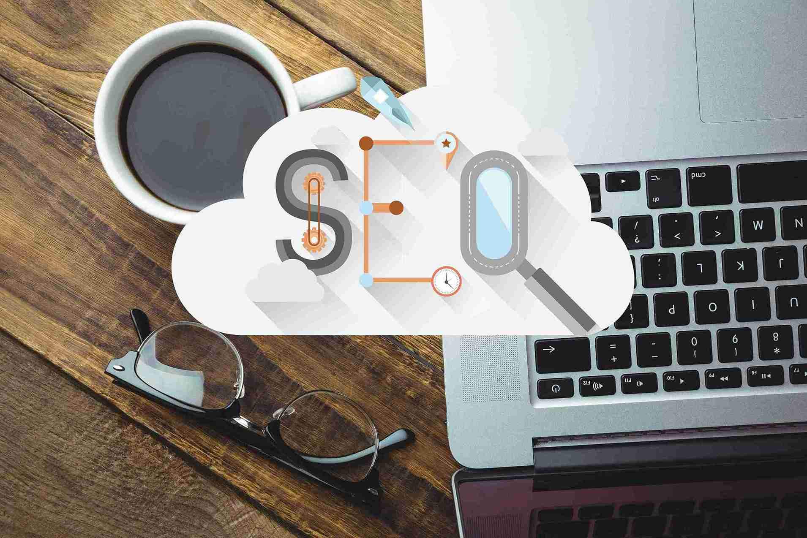

On-page SEO has evolved significantly over the years. What worked a few years ago like keyword stuffing or over-optimized headings, no longer delivers results. In 2025, on-page SEO is about clarity, relevance, user experience, and trust.
This guide explains the on-page SEO strategies that actually work in 2025, helping businesses and website owners improve rankings while staying aligned with Google’s latest algorithm updates.
Why On-Page SEO Still Matters in 2025
On-page SEO is the foundation of every successful SEO strategy. It helps search engines understand what your page is about, who it’s for, and why it deserves to rank.
Even with strong backlinks, poor on-page SEO can limit ranking potential. On the other hand, well-optimized pages can rank effectively even with fewer backlinks. Combining solid on-page SEO with effective link building strategies creates a balanced SEO foundation.
1. Search Intent Optimization
In 2025, Google prioritizes search intent over keyword density.
Instead of asking:
“How many times should I use a keyword?”
Ask:
“Does my content fully solve the user’s problem?”
What works:
- Understanding whether the query is informational, commercial, or transactional
- Structuring content to match that intent
- Answering follow-up questions within the same page
Pages that satisfy intent clearly tend to rank higher and stay stable after updates.
2. High-Quality, Helpful Content
Content quality is still the strongest on-page SEO factor.
Google favors content that is:
- Original and experience-driven
- Easy to read and understand
- Structured with clear headings
- Written for humans, not bots
Thin or generic content struggles to survive in 2025, especially after helpful content updates.
3. Optimized Title Tags & Meta Descriptions
Your title tag is often the first impression users get in search results.
Best practices in 2025:
- Keep titles under 60 characters
- Use the primary keyword naturally
- Add clarity or benefit (not clickbait)
Meta descriptions don’t directly affect rankings but strongly influence click-through rate (CTR).
Tip: Better CTR = stronger ranking signals over time.
4. Proper Heading Structure (H1-H3)
Headings help both users and search engines understand content structure.
What works:
- One clear H1 per page
- Logical H2 and H3 subheadings
- Descriptive, keyword-relevant headings
Avoid using headings purely for styling. Every heading should guide the reader.
5. Internal Linking for Topical Authority
Internal linking is one of the most underrated on-page SEO strategies.
Benefits:
- Improves crawlability
- Distributes link equity
- Strengthens topic relevance
- Helps users discover related content
A strong internal linking structure allows Google to see your website as an authority on specific topics.
6. Image Optimization & Visual SEO
images improve user experience, but only when optimized correctly.
Image SEO best practices:
- Descriptive file names
- Relevant ALT text
- Compressed file size
- Proper dimensions
Optimized images improve:
- Page speed
- Accessibility
- Google Image visibility
7. Page Experience & Core Web Vitals
User experience is no longer optional.
Google evaluates:
- Page loading speed
- Mobile usability
- Visual stability
- Interaction responsiveness
Even great content may struggle if the page experience is poor.
8. Content Freshness & Updates
SEO isn’t “publish and forget.”
Google prefers content that:
- Stays updated
- Reflects current trends
- Improves over time
Updating existing pages often delivers faster results than creating new ones. Understanding how long SEO takes to show results helps set realistic expectations and encourages consistent optimization instead of quick fixes.
9. Semantic SEO & Natural Language
Google understands context better than ever.
Instead of repeating keywords, focus on:
- Related terms
- Natural language
- Contextual relevance
This helps your content rank for multiple variations of the same topic.
Common On-Page SEO Mistakes to Avoid in 2025
- Keyword stuffing
- Thin or AI-only content
- Duplicate headings
- Poor internal linking
- Ignoring mobile users
These mistakes often trigger ranking instability after updates.
What Actually Works in 2025
- User-first content
- Clear structure
- Strong internal linking
- Technical cleanliness
- Continuous improvement
Final Thoughts
On-page SEO is no longer about tricks, it’s about clarity and value. When your pages clearly explain what they offer, who they’re for, and why they matter, search engines reward them naturally.
Focus on helping users first, and rankings will follow.
Want Better On-Page SEO Results?
A structured on-page SEO strategy tailored to your website and audience can significantly improve rankings without relying heavily on backlinks.